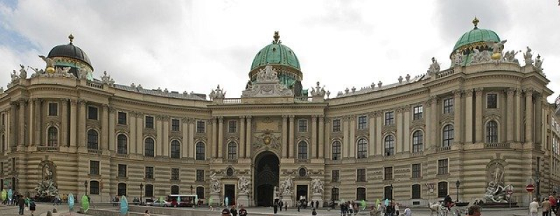

О городе
Инсбрук - один из лучших горнолыжных курортов Австрии.
Сам город расположился в долине реки Инн, у самого подножия Восточных Альп. Поэтому, почти невозможно найти место в этом городе, чтобы не было видно гор.
Инсбрук в цифрах:
- Население: чуть более 130 000 человек
- Часовой пояс: UTC+1 зимой и UTC+2 летом
- Зоны для катания: 9 штук, все связаны между собой транспортным сообщением
- Перепад высот: 860 метров — 3100 метров
- Продолжительность сезона: с 12 месяца (декабрь) по 4 месяц (апрель) включительно
- Возраст посетителей всех зон: с 2 лет и старше, без ограничений.
Температура по месяцам

Галерея
Впрочем, кроме спусков на лыжах, здесь хватает удивительных мест.
-
Императорский дворец
 -

Парк Хофгартен
-
Замок Абрам

Инсбург на карте
😀Благодаря удобному расположению, добраться до сердца Альп не составляет особого труда.
| Вид транспорта | Из Москвы | Из Вены | Из Мюнхена |
|---|---|---|---|
| Самолет | + | – | – |
| Поезд | + | + | + |
| Автомобиль | – | + | + |
| Автобус | – | + | |
| Иные способы | – | Трансфер на заказ | Трансфер на заказ |